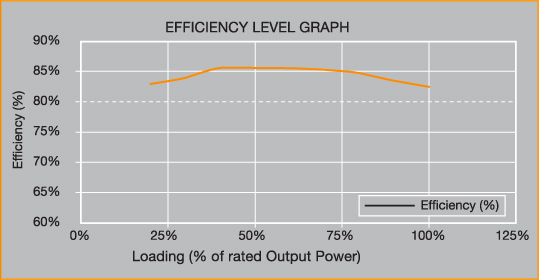
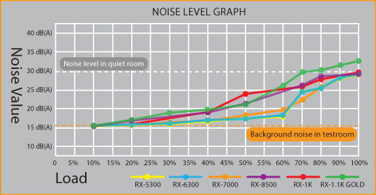
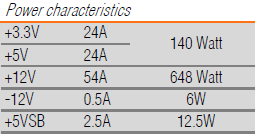
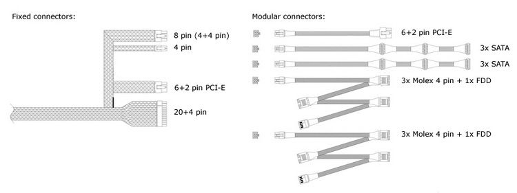
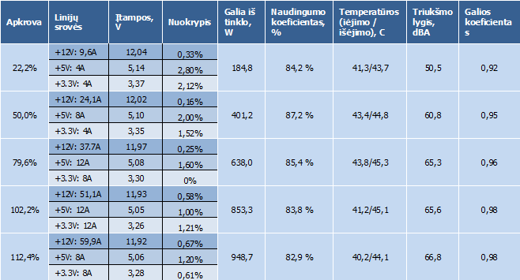
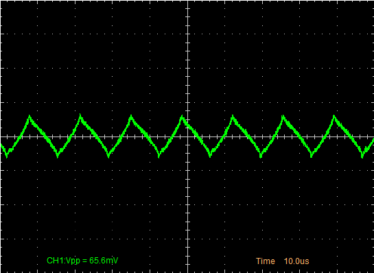
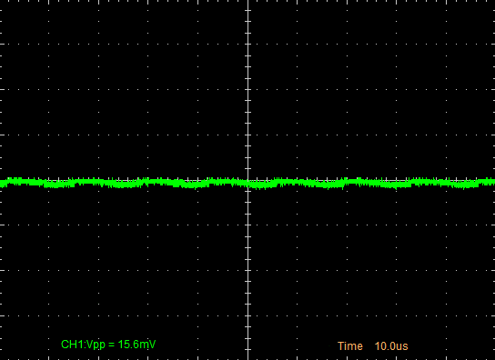
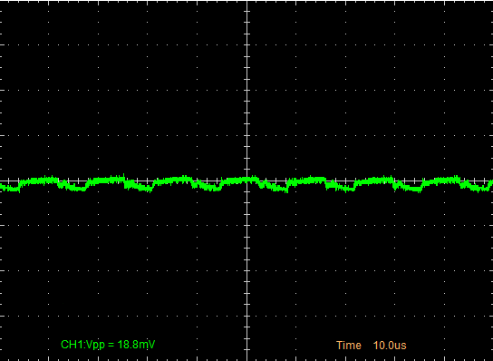

Nexus RX-7000 maitinimo šaltinio apžvalga
Šiuo metu 600 - 700 vatų maititinimo šaltinių pasirinkimas galingiems kompiuteriams Lietuvoje pakankamai didelis. Tarp jų produktai iš Chieftec, HEC, Fortron, Corsair ir kitų, tarp kurių yra ir Nexus - kompanijos, pardavinėjančios korpusus, aušintuvus, maitinimo blokus bei kitus kompiuterių aksesuarus, produktai. Šiandien apžvelgsime Nexus RX-7000 700 W maitinimo šaltinį reiklesniems vartotojams su galingomis komplektacijomis.
Pakuotė ir komplektacija
RX-7000 maitinimo šaltinis mums atkeliavo įprastoje mažmeninei prekybai skirtoje pakuotėje. Priekinėje dalyje randame šaltinio nuotrauką, gamintoją bei modelio numerį. Galinėje dalyje trumpas savybių aprašymas, lentelė su informacija apie galios paskirstymą tarp skirtingų įtampų linijų bei bloko kabelius. Pakankamai malonu šoninėje dėžutės dalyje rasti informaciją apie maitinimo bloko naudingumo koeficientą prie skirtingų apkrovų bei informaciją apie ventiliatoriaus sūkius esant skirtingai apkrovai, nepaisant to, jog testai greičiausia atlikti kambario temperatūroje.
Pakuotėje randame:
- Maitinimo bloką
- Atjungiamus kabelius
Tiesą sakant, komplektacija tikrai skurdi. Renkantys naują kompiuterį žmonės patys turės pasirūpinti AC maitinimo laidu. Montavimo varžtai gal ir nėra būtinybė (jų daugiau negu reikia paprastai prikrauna korpusų gamintojai), tačiau tikrai nebūtų maišę ar kėlę maitinimo šaltinio kainą. Vartotojo vadovas keičiant maitinimo šaltinį galbūt naudojamas retai, tačiau bent jau trumpas bukletas taip pat nebūtų pakenkęs.
Specifikacijos
Maitinimo šaltinio specifikacijos pakankamai detaliai pateikiamos tiek ant pakuotės, tiek ir Nexus tinklapyje. Blokas atitinka ATX V12 2.2 standartą, turi aktyvią galios koeficiento korekcijos grandinę, gali veikti tiek 115, tiek ir 230 V įtampos tinkluose, pasižymi naudingumo koeficientu, kuris, pasak Nexus, esant 20 % ir didesnei apkrovai, yra ne mažesnis nei 82 %, jungiant jį į 115 V įtampos maitinimo tinklą, taigi suprantama, jog 230 V tinkle naudingumo koeficientas turėtų būti dar didesnis. Tai turėtų atitikti 80 Plus bronzinį sertifikatą, tačiau tokio nei šis, nei kiti RX serijos Nexus maitinimo blokai, išskyrus 1100 W modelį, neturi. Pačių Nexus teigimu, norėdami padaryti blokus pigesnius, šie nesiuntė Ecos testavimui, gauti oficialų sertifikatą ir pasitiki savo (o tiksliau, greičiausiai, OEM gamintojo testų rezultatais).

Maitinimo šaltinis turi "kelias apsaugas", iš kurių Nexus kažkodėl paminėjo tik apsaugą nuo viršįtampių ir trumpo jungimo. Nexus teigimu, maitinimo šaltinio ventiliatoriaus sukuriamas triukšmas prie nedidelių apkrovų tesiekia 15.5 dBA. Skaičius įspūdingas, tačiau nereikia pamiršti didesnių temperatūrų kompiuterio korpuse. Toks slėgis, kuris iš esmės gali būti išgirstas tik prikišus ausį prie pat šaltinio, galės būti fiksuojamas nepakrovus procesoriaus ir grafikos plokštės, nes reikia pripažinti, jog 700 W maitinimo šaltinis tikrai nebus komplektuojamas su sistema, kuri maksimaliai apkrauta naudoja mažiau nei 200 W galios.

Nexus RX-7000 turi vieną nepadalintą +12 V liniją, kas pašalina net ir teorines galimybes, perkrauti kažkurią +12 V liniją atsitiktinai prijungiant prie jos per daug komponentų. Maksimalus deklaruojamas srovės stipris šioje linijoje - 54 A, taigi blokas gali vien +12V linija atiduoti daugiau nei 92 % visos savo galios, kas yra puiku, atsižvelgiant į dabartinių kompiuterių komponentų energijos sąnaudas. +3,3 ir +5 V linijų maksimalios srovės yra po 24 A, o maksimali kombinuota galia - 140 W.

Maitinimo blokas
Maitinimo šaltinio matmenys siekia 150 x 86 x 158 mm - gylis šiek tiek didesnis nei standartinio bloko, tačiau tikrai ne didesnis nei kitų analogiškos galios dabar parduodamų gaminių. Išoriškai RX-7000 nėra labai išsiskiriantis. Jo paviršius blizgus, padengtas juodais dažnais, taigi atrodo pakankamai neblogai, bet yra gana neatsparus įbrėžimams. Nuotraukoje galite matyti negilius įbrėžimus, kurie atsiras vos po poros neatsargių montavimų į daugumą korpusų.
Aušinimo sprendimas maitinimo bloke gerai pažįstamas: 135 x 135 x 25 mm matmenų ventiliatorius bloko apačioje, vėsinantis bloko komponentus ir šiltą orą šalinantis pro gale esančias korio formos groteles. Galinėje dalyje randame tik maitinimo lizdą ir jungiklį. Čia palikta vieta ir 115 - 230 V režimo perjungimui, tačiau, kadangi šaltinis veikia pilname 115-230 V įtampų diapazone, jo čia, žinoma, nėra.
Nexus RX-7000 blokas turi atjungiamus kabelius. Tiesa, atjungiami jie ne visi. Visų jų ilgis yra vidutinis, visi jie taip pat įvilkti. Ir įvilkti ne į tamsias, juodas, o į kiek labiau išsiskiriančias "rankoves" su baltais X formos padailinimais. Pagrindinių laidų apimtis šiame maitinimo bloke siekia 18 AWG.

Atjungiami kabeliai
- 6+2 kontaktų PCI-E grafikos plokštės maitinimui (50 cm)
- 3 x SATA maitinimo kabelis (50 + 20 + 20 cm)
- 3 x SATA maitinimo kabelis (50 + 20 + 20 cm)
- 3 x "Molex" maitinimo kabelis + 1 x FDD (50 + 15 + 15 cm)
- 3 x "Molex" maitinimo kabelis + 1 x FDD (50 + 15 + 15 cm)
Neatjungiami kabeliai
- 4 kontaktų P4 procesoriaus maitinimui (50 cm)
- 4+4 kontaktų EPS procesoriaus maitinimui (50 cm)
- 6+2 kontaktų PCI-E grafikos plokštės maitinimui (50 cm)
- 20+4 kontaktų maitinimo kabelis pagrindinei plokštei (50 cm)
Kabelių kiekiu RX-7000 taip pat neišsiskiria. Periferijai ir kietiesiems diskams kabelių tikrai pakanka. Kaip ir dauguma 600 - 700 maitinimo šaltinių jis turi tik du maitinimo kabelius vaizdo plokštėms (palikta vieta trečiojo kabelio prijungimui). Visgi labiau norėtųsi matyti keturis maitinimo kabelius vaizdo plokštėms, kadangi 700 W maitinimo šaltinis yra pajėgus išmaitinti nemažai kompiuterių konfigūracijų su dvejomis vaizdo plokštėmis, kurių maitinimui įrengti du papildomi lizdai. Tarp atjungiamų kabelių tikrai būtų buvę malonu matyti 4 kontaktų procesoriaus maitinimo laidą, kadangi jis galėtų būti panaudojamas tik labai retais atvejais. Kabelių ilgis pakankamas ir nenusileidžia daugumai konkurentų.
Vidus ir konstrukcija
Atsidarius RX-7000 vidų matyti, jog šis maitinimo blokas yra identiškos konstrukcijos kaip ir silpnesnis RX-6300 modelis. Tiek tranzistorius, tiek ir diodus aušina du pakankamai nedideli radiatoriai. Prie antrojo randame ir termorezistorių, kurio pagalba valdomas 135 mm skersmens ventiliatorius su 11 mentelių. Jį pagamino Muhua Industrial Co. Apie jį informacijos rasti nepavyko, tačiau, sprendžiant iš 0,3 A naudojamos srovės, tankių mentelių bei didelio skersmens, maksimaliomis apsukomis turėtų sukurti nemenką oro srautą.
Nexus patys negamina maitinimo šaltinių, ir RX-7000, kaip ir greičiausia visų kitų RX serijos maitinimo šaltinių gamintojas yra ATNG. Pirminiam filtravimui sunaudota pora droselių, krūva kondensatorių, kurių dalis "sulipdyta" ant pagrindinės PCB, o dalis - ant atskiros plokštės sumontuotos iškart ties AC maitinimo lizdu ir nuo tinklo įtampos šuolių apsaugančiu varistoriumi. Pagrindinis kondensatorius 330 uF talpos, galintis veikti prijungus iki 400 V įtampą. Kaip ir likę maitblokio kondensatoriai, kurie, beje, pritaikyti dirbti temperatūrose iki 105 laipsnių pagal Celsijų, yra pagaminti Taivano kompanijos Teapo. Gamintojas gal ir neturi tokio vardo, kaip Chemi-Con, tačiau neturėtų kelti problemų. Bendrai konstrukcija atrodo niekuo neišsiskirianti, nepanaudoti netgi DC-DC keitikliai. Droseliai, galintys skleisti nepageidaujamus garsus, "užteplioti" klijais. PFC ir apsaugų mikroschemų viršutinėje montažinės plokštės dalyje nematyti. Jie sulituoti galinėje PCB dalyje.
Testavimas
Metodika
Kadangi šio maitinimo šaltinio testavimas skirsis nuo matyto ankstesnėse modding.lt apžvalgose, šiek tiek išsamiau aprašyti reikėtų ir testavimo procesą. Kompiuterį, kuris buvo apkrova maitinimo šaltiniui praeitose apžvalgose, nuo šiol pakeis paprasta reguliuojama apkrova, sudaryta iš daugybės didelės galios rezistorių, galinti pagrindinę, +12 V maitinimo bloko liniją apkrauti iki 96 amperų srove, o +3,3 ir +5 V linijas iki 40 A srove. Įprastas kompiuteris nėra tinkamas testuoti maitinimo šaltiniams, kadangi neleidžia reguliuoti apkrovos pagal pageidavimus. Be to, maksimaliai apkrauti galingus (600 W ir daugiau) maitinimo šaltinius reikėtų labai energijai reiklių kompiuterio komponentų.
Apkrovą maitinimo šaltiniui galima reguliuoti 4 A žingsniu +3,3 ir +5 V įtampoms bei 2 A +12 V įtampai. Žingsnis grubus, tačiau kol kas jis pakankamas. Rezistorių varža šiek tiek kinta, priklausomai nuo temperatūros, tačiau srovių stipriai testuojant yra stebimos. Kadangi testavimo procesas nėra automatizuotas, atliekami penki bandymai: maitinimo šaltinis apkraunamas 20, 50, 75 ir 100 % (arba artimomis šiems skaičiams apkrovomis) gamintojo deklaruojamos šaltinio galios. Paskutinis bandymas - perkrovos testas, kurio metu maitinimo šaltinis veikia ~110-115 % deklaruojamos galios. Kiekvieno bandymo metu multimetru stebimos +3,3, +5 ir +12 V įtampos ir jų nukrypimas nuo normos, apskaičiuojamas naudingumo koeficientas, oscilografu stebimos įtampų pulsacijos.
Visų testų metu maitinimo blokas laikomas artimai 40 laipsnių pagal Celsijų temperatūroje, siekiant imituoti darbo sąlygas korpuse su ribotu aušinimu. Fiksuojamos į maitinimo bloką patenkančio ir iš jo išeinančio oro temperatūros. Temperatūros palaikymui naudojamos kaitrinės lemputės. Taip pat matuojamas ir maitinimo šaltinio triukšmo lygis. Tiesa, jis čia bus kur kas didesnis nei deklaruoja gamintojas, kadangi apkrovos rezistoriams aušinti reikalingi nemažai garso skleidžiantys ventiliatoriai, dėl kurių keliamo triukšmo matavimai atliekami 5 cm atstumu nuo maitinimo bloko, kai tuo tarpu gamintojų testai atliekami labai tylioje aplinkoje, paprastai 1 m atstumu nuo šaltinio. Be to, gamintojai dažnai deklaruoja tik minimalų triukšmo lygį, kuris taip pat dažniausiai pasiekiamas tik kambario temperatūroje iki 25 laipsnių.
Testavimas vyksta jungiant maitinimo bloką į įprastą 230 V, 50 Hz maitinimo tinklą.
Rezultatai

Pirmiausia noriu atkreipti dėmesį į tiesiog puikias +12 V linijos įtampas. visuose testuose +12 V įtampa svyravo labai minimaliai, o didžiausi nuokrypiai siekė vos du trečdalius procento. +5V įtampa esant nedidelėms apkrovoms nukrypsta kiek labiau, tačiau iki 5 % ribos dar toli. Gauti naudingumo koeficiento rezultatai rodo, jog RX-7000 iš tiesų galėtų gauti 80 Plus Bronze sertifikatą (testuojant 115V įtampos tinkle).

+12 V linijos pulsacijos

+5 V linijos pulsacijos

+3,3 V linijos pulsacijos
Įtampos pulsacijų amplitudės šiame maitinimo bloke buvo sąlyginai nedidelės, ir iki ribinių ATX V12 standarto verčių (120 mV +12V linijai ir po 50 mV +3,3 ir +5V linijoms) joms trūko nemažai. Žemiau galite matyti pulsacijas ketvirto testo metu, apkrovus jį 102 % deklaruojamos galios. Prie mažesnių apkrovų pulsacijos buvo dar mažesnės.
Perkrovos testas parodė, jog Nexus RX-7000 prireikus gali teikti ir didesnę nei 700 W galią su mažomis įtampų nuokrypiais ir geru naudingumo koeficientu. Bent jau taip jis elgėsi 15 minučių trukmės paskutiniame teste. Pulsacijos +12V linijoje šio testo metu kiek išaugo, tačiau nebuvo prie pavojingos ribos (perkrovos testo +12V, +5V, +3,3V oscilogramos).
Esant nedidelei apkrovai, net ir prie aukštos temperatūros, šis maitinimo blokas klausant plika ausimi veikė labai tyliai. Tiesa, >40 laipsnių temperatūroje padidinus apkrovą, gana staigiai pakilo ir ventiliatoriaus apsukos. Prie didžiausių apkrovų tokioje temperatūroje jis visgi triukšmauja kiek daugiau nei kai kurie konkurentai, tačiau tikrai ne tiek, kad tai taptų rimtu trūkumu. Pažvelgus į bloko temperatūras, matyti, jog toks ventiliatorius turi ir nemažą pliusą.
Su išjungtu jungikliu bloko energijos sąnaudos siekia 0,8 W, o su įjungtu - 1,1 W. Kitaip tariant, išjungtas kompiuteris elektra tikrai nepiktnaudžiaus. Kadangi blokas turi tik vieną +12V liniją, apsaugos nuo per didelės srovės atskiroms +12V linijoms irgi nėra. Bent jau iš perkrovos testo matyti, kad bent keliais amperais didesnę srovę +12 V linijai maitinimo blokas yra tikrai pajėgus tiekti. Apsauga nuo trumpo jungimo +12 V linijoje veikia puikiai - maitinimo šaltinis išsijungia, o įjungtas vėl puikiai dirba. Užtrumpinus +5 V liniją apsauga nesuveikė arba ji apskritai neegzistuoja, o mano pincetas, kurį naudojau trumpinimui, maloniai apkepė.
Išvados
Pliusai:
- Viena stipri ir stabili +12 V linija
- Aukštas naudingumo koeficientas
- Prireikus gali tiekti didesnę nei 700 W galią
- Pakankamai laidų kaupikliams ir periferijai
Minusai:
- Skurdi komplektacija
- Neaiškus maitinimo bloko apsaugų aprašymas
- Lengvai braižosi
- Neatjungiamas P4 CPU maitinimo kabelis
 Bendrai Nexus RX-7000 pasirodymas palieka teigiamus įspūdžius. Aukšto maitinimo bloko naudingumo koeficiento buvo galima tikėtis pažvelgus į specifikacijas, tačiau labai nustebino beveik nekintanti priklausomai nuo apkrovos +12V linijos įtampa. Tylaus veikimo prie nedidelių ir vidutinių apkrovų iš tiesų negalima laikyti kažkokiu išskirtiniu šaltinio pliusu, kadangi praktiškai visi >200 Lt kainuojantys maitinimo šaltiniai su didelio diametro ventiliatoriais tokiomis sąlygomis bus negirdimi. Atjungiami maitinimo kabeliai taip pat nėra joks išskirtinumas, o greičiau būtinybė maitinimo šaltiniams su tokiu laidų kiekiu. Tik pora PCI-E kabelių
sunku pavadinti dideliu trūkumu, kadangi maitinimo blokai, kurių galios siekia iki 700 W imtinai dažniausiai tiek kabelių ir turi, nors kai kurios kiek reiklesnių plokščių SLI ar Crossfire konfigūracijos jiems ir nekeltų problemų.
Bendrai Nexus RX-7000 pasirodymas palieka teigiamus įspūdžius. Aukšto maitinimo bloko naudingumo koeficiento buvo galima tikėtis pažvelgus į specifikacijas, tačiau labai nustebino beveik nekintanti priklausomai nuo apkrovos +12V linijos įtampa. Tylaus veikimo prie nedidelių ir vidutinių apkrovų iš tiesų negalima laikyti kažkokiu išskirtiniu šaltinio pliusu, kadangi praktiškai visi >200 Lt kainuojantys maitinimo šaltiniai su didelio diametro ventiliatoriais tokiomis sąlygomis bus negirdimi. Atjungiami maitinimo kabeliai taip pat nėra joks išskirtinumas, o greičiau būtinybė maitinimo šaltiniams su tokiu laidų kiekiu. Tik pora PCI-E kabelių
sunku pavadinti dideliu trūkumu, kadangi maitinimo blokai, kurių galios siekia iki 700 W imtinai dažniausiai tiek kabelių ir turi, nors kai kurios kiek reiklesnių plokščių SLI ar Crossfire konfigūracijos jiems ir nekeltų problemų.
Ar RX-7000 yra geriausias pasirinkimas šiame kainų diapazone? Ko gero ne. Už 340 - 350 litų gaunate tikrai kokybiškai veikiantį 700 W galios maitinimo šaltinį, tačiau ši suma nėra maža, ypač turint omenyje jog kartu su maitinimo bloku daugiau nieko negaunate. Žinoma, tai kiek pigiau nei panašių specifikacijų Corsair ar Thermaltake gaminiai, turintys panašias specifikacijas, tačiau yra FSP Everest ar Chieftec BPS serijos, kurias galima rasti pigiau, ir kurios taip pat rodo labai gerus rezultatus.
Nexus RX-7000 maitinimo šaltiniui suteikiu 8 balus iš 10 bei modding.lt rekomenduoja įvertinimą.
Modding.lt komanda dėkoja Dennis van Driel iš www.nexustek.nl už apžvalgai suteiktą produktą.
Jei norėsite pakomentuoti mano straipsnį arba pareikšti savo nuomonę, apsilankykite Modding.lt forume.


{kind=link}
{kind=link}
{kind=link}
{kind=link}
{kind=link}
{kind=link}
{kind=link}
{kind=link}
{kind=link}
{kind=link}
{kind=link}
{kind=link}
{kind=link}
{kind=link}
{kind=link}
{kind=link}
{kind=link}
{kind=link}
{kind=link}